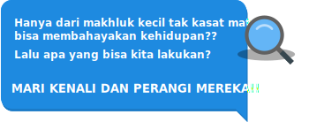

Pada tahun 2011, melalui data statistik kesehatan di Indonesia diketahui bahwa terdapat dua penyakit yang sering menimpa warga Negara Indonesia. Kedua penyakit tersebut adalah penyakit disentri dan penyakit kulit yang jumlahnya juga meningkat setiap tahunnya. Terdapat persamaan dari kedua penyakit tersebut yakni penyebab dari penyakit itu sendiri yakni disebabkan oleh mikroorganisme.
Penelitian mengejutkan selanjutnya adalah bahwa mikroorganisme penyebab disentri dan penyakit kulit tersebut resisten terhadap antibiotik yang biasanya digunakan sebagai bahan pengobatan penyakit disentri dan kulit. Lalu bagaimana dengan cara peyembuhan penyakit disentri dan kulit apabila penyebab penyakit itu sendiri sudah resisten terhadap obat yang biasa digunakan?
Dari fenomena yang disajikan, jawablah beberapa pertanyaan di bawah ini!
Rencanakan sebuah percobaan untuk menguji hiptesis yang sudah Saudara buat sebelumnya dengan panduan sebagai berikut!
Laksanakan percobaan sesuai dengan rancangan percobaan yang telah Saudara buat!
Analisislah data yang Saudara dapatkan dari hasil percobaan dengan mengikuti petunjuk sebagai berikut:
Setelah melakukan percobaan dan mendapatkan data hasil percobaan, jawablah pertanyaan di bawah ini!
Berdasarkan hasil percobaan yang Saudara lakukan, susunlah laporan hasil temuan dalam bentuk laporan penelitian yang harus Saudara unggah di halaman yang telah disiapkan!